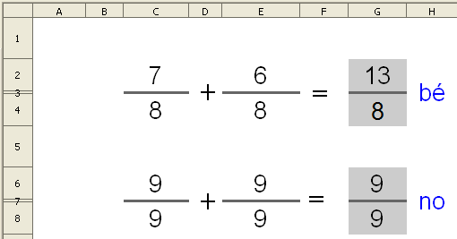
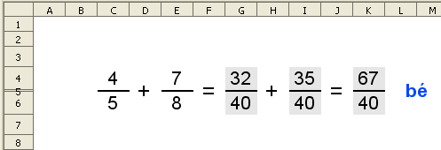
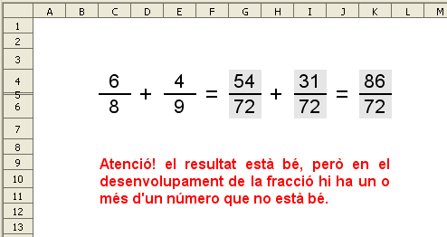

Operacions amb les fraccions
Suma de fraccions amb denominadors iguals
Presentació gràfica de l'activitat

Funcions que es fan servir en aquesta activitat
Objectiu de l'activitat
Fer una suma de fraccions amb denominador igual i amb avaluació.
Desenvolupament de l'activitat
1. Obrir el calc i canviar el nom de Full1 pel de M3P1 suma fracció ID
2. Formatar les cel·les del rang G2:G4 amb els següents atributs:
-
tipus de lletra: arial
-
tipografia: normal
-
mida: 20
3. Ecriure a les cel·les C2 i E2: =SI($A$1=0;ALEATENTRE(1;9))
4. Ecriure a la cel·a C4: =SI($A$1=0;ALEATENTRE(C2;9))
7. Posar l'operador de sumar (+) a la cel·la D3 i el signe d'igual (=) a la cel·la F2 . Per posar aquests signes es pot fer el següent:
-
Fusionar les cel·les del rang D2:D4.
-
Escriure el signe de sumar a la cel·la D2 i alinear-lo al centre vertical i horitzontalment. Mida de lletra: 14
-
Fusionar les cel·les del rang F2:F4
-
Escriure el signe d'igual ( = ) a la cel·la F2 i alinear-lo al centre vertical i horitzontalment. Mida de lletra: 14
-
Fusionar les cel·les del rang H2:H4
8. Fer que el color de fons de les cel·les G2 i G4 sigui gris 20%.
9. Formatar la cel·la H2 amb les següents característiques:
-
Alineació centrada vertical i horitzontalment.
-
Color de la lletra: blau 5
10. Esciure a la cel·la I2: =SUMA(C2;E2)
11. Esciure a la cel·la I4: =E4
12. Ecriure a la cel·la H2: =SI(O(G2="";G4="");"";SI(I(G2=I2;G4=I4);"bé";"no"))
13. Fer que el color de fons de les cel·les C3, E3 i G3 sigui negre.
14. Protegir les cel·les que convingui.
15. Ocultar les cel·les que convingui.
16. Comprovar que l'activitat funcioni correctament.
17. Desar el fitxer amb el nom de M3.
Suma desenvolupada de fraccions amb denominadors diferents
Presentació gràfica de l'activitat


Funcions que es fan servir en aquesta activitat
-
Operadors de multiplicar (*) i dividir (/)
-
*Operadors de comparació (< >)
Objectiu de l'activitat
Fer una suma desenvolupada de fraccions amb denominadors diferents i amb avaluació.
Desenvolupament de l'activitat
1. Obrir el fitxer M3 i canviar el nom de Full2 pel de M3P1 suma fracció DD
2. Fer que l'amplada de les columnes sigui d'1 cm
3. Formatar les cel·les del rang C4:K6 amb els següents atributs:
-
tipus de lletra: arial
-
tipografia: normal
-
mida: 16
4. Ecriure a les cel·les C4 i E4: =SI($A$1=0;ALEATENTRE(1;9))
5. Ecriure a la cel·a C6: =SI($A$1=0;ALEATENTRE(C4;9))
6. Ecriure a la cel·la E6: =SI($A$1=0;ALEATENTRE(E4;9))
7. Alçada de la fila 5: 1mm
8. Posar els signes de sumar i els d'igualtat a les cel·les que correspongui seguint el procediment explicat en la pràctica anterior (fent servir les tecles Ctrl+C i Ctrl+V es fa ràpidament).
9. Color de fons de les cel·les G4,I4, K4, G6,I6, K6: gris 20%.
10. Combinar les cel·les del rang L4:M6.
11. Ecriure a la cel·la L4:=SI(I(N4="bé";N6="bé");"bé";"")
12.Formatar la cel·la L4 amb les següent característiques:
-
Alineació centrada vertical i horitzontalment.
-
Color de la lletra: blau 5
13. Esciure a la cel·la O4: =C4
14. Copiar la cel·la O4 a les cel·les O6, Q4 i Q6
15. Esciure a la cel·la S6: =MCM(O6;Q6)
18. Esciure a la cel·la U4: =U6/Q6*Q4
19. Esciure a la cel·la W4: =S4+U4
20. Esciure a la cel·la W6: =MCM(O6;Q6)
21. Escriure a la cel·la N4: =SI(O(G4="";I4="";K4="";G6="";I6="";K6="");"";SI(I(K4=W4;K6=W6);"bé";"no"))
22. Escriure a la cel·la N6: =SI(O(G4<>S4;I4<>U4;G6<>S6;I6<>U6);"no";"bé")
23. Conectar les cel·les del rang C9:K12
24. Escriure a la cel·la C9: =SI(I(N4="bé";N6="no");"Atenció! el resultat està bé, però en el desenvolupament de la fracció hi ha un o més d'un número que no està bé.";""). Fer que el format de la cel·la C9 sigui el següent:
-
tipus de lletra: arial
-
mida de la lletra: 14
-
alineació: justificat
-
color de la lletra: vermell
25. Ocultar les cel·les que convingui.
26. Protegir les cel·les que convingui.
27. Comprovar que l'activitat funcioni correctament.
28. Desar el fitxer M3.
|
|

|
|
|